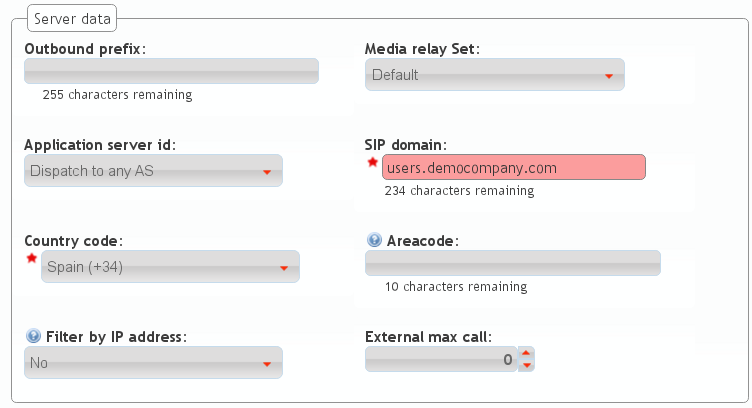
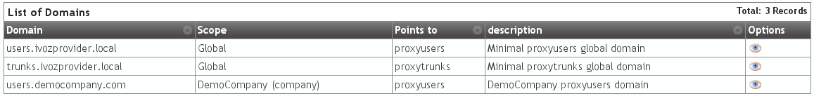

Brand Configuration¶
We need that the default DemoBrand have a company with at least 2 users. In order to archive this we will require little configuration in this section.
In fact, if we check Companies in the brand menu, we’ll discover that there is already an existing DemoCompany that we can use to fulfill our desired goal :)
Only a thing is required to configure for this company, marked as edit in the previous image.
Company SIP Domain¶
As mentioned in the previous section, is required that each of the companies have a public domain that resolves to the configured IP address for Users SIP Proxy.
Note
DNS register can be type A (supported by all the hardphones/softphones ) or even NAPTR+SRV.
Once the domain has been configured (by means that are out of scope of this document), it will be enought to write it in our company configuration:
Once the company has been saved, the domain will be also displayed in the list previously mentioned:
Attention
It’s important to understand this block. Unless we’ve a single company registered, wihout a DNS domain pointing to our users proxy IP address, everything will fail.
This is a good sign for the domain we have configured right now, replacing the 10.10.3.10 with the public address we have used to configure Users SIP Proxy.

Danger
Have we stressed enough that without a properly configured DNS pointing to the Users proxy IP address nothing will work?
I have no time for a DNS registry¶
Everything we have said is true: as we create new brands and brands create new companies, each of them will need a DNS registry.
But the first company of the platform is quite special and can take over the IP address of the proxy to use it as a domain:
Although it is not a domain, but being used like it was, it will be displayed in Domain section:
Tip
It’s important to understand the this trick is only valid for the first company of the platform ;)
Remaining parameters¶
These are remaining relevant parameters configured in Companies section:
- Name
- Sets the name for this company.
- NIF
- Number used in this company’s invoices.
- Invoice data
- Data included in invoices created by this brand.
- Outbound prefix
- Some companies are used to dial an aditional prefix for outgoing calls.
- Outgoing DDI
- Introduced in 1.3, this setting selects a DDI for outgoing calls of this company, if it is no overridden in a lower level (e.g. user level)
- Media relay set
- As mentioned above, media-relay can be grouped in sets to reserve capacities or on a geographical purpose. This section lets you assign them to companies.
- Distribute Method
- ‘Hash based’ distributes calls hashing a parameter that is unique per company/retail, ‘Round robin’ distributes calls equally between AS-es and ‘static’ is used for debugging purposes.
- Application Server
- If ‘static’ distribute method is used, select an application server here.
- Recordings
- Configures a limit for the size of recordings of this company. A notification is sent to configured address when 80% is reached and older recordings are rotated when configured size is reached.
- Features
- Introduced in 1.3, lets brand operator choose the features of the company. Related sections are hidden consequently and the company cannot use them.
Most of the features are self-explanatory, but voice notification deserves an explanation: if you enable them, when a call fails, the user will listen a locution explaining what ocurred (“you have no permissions to place this call”, “the call cannot be billed”, etc.)
Warning
Recordings rotation happens at two levels: brand and company. This means that a company’s recordings can be rotated even though its limit has not arrived (or even it has no limit) if brand’s limit applies first.
Error
Again: recordings rotation happens at two levels: brand and company. This means that a company’s recordings can be rotated even though its limit has not arrived (or even it has no limit) if brand’s limit applies first.
Hint
To avoid this, make sure that the sum of all companies does not exceed the size assigned to your brand and make sure that all companies has a size configured (if 0, it has unlimited size).
Both Distribute method and Application Server are only visible for God Administrator.
Warning
‘Round-robin’ distribute method is reserved for huge companies/retails whose calls cannot be handled in a single AS. Use ‘Hash based’ for remaining ones.
Emulate Demo company¶
The company emulation process is the same as the brand emulation, with the difference that it filters the block ‘Company Configuration’ insted of ‘Brand Configuration’.

Once the company has been emulated, the top right corner of the portal will show that we are in the right path :)